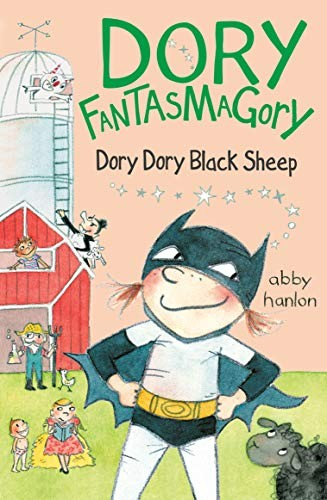
01轻松桥梁
Dory Fantasmagory
幽默日常，最适合延续已喜欢的系列。
🟡 Amazon Kids+：有美国 Kindle 版；尚未找到官方 Kids+ 包含标识
从她已经喜欢的漫画、谜题与幽默故事出发，逐步过渡到有故事张力的章节书；每本都有封面、推荐理由和阅读难度提示。
关于 Amazon Kids+：核验日期为 2026-09-01。Kids+ 的可读目录会因美国账号、设备与授权时间动态变化；本页没有把“有 Kindle 版”误写成“已包含”。只有在美国区儿童档案中出现 Included with Amazon Kids+ 才会标为“已确认包含”。目前：0 本已确认包含、27 本待实测、3 本暂不纳入。

01轻松桥梁
幽默日常，最适合延续已喜欢的系列。
🟡 Amazon Kids+：有美国 Kindle 版；尚未找到官方 Kids+ 包含标识
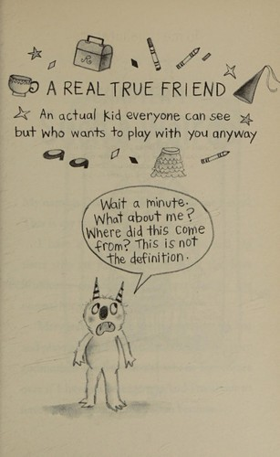
02轻松桥梁
友情主题，承接第一本。
🟡 Amazon Kids+：有美国 Kindle 版；尚未找到官方 Kids+ 包含标识
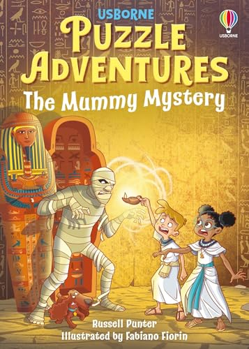
03轻松桥梁
解谜互动，阅读阻力低。
⚪ Amazon Kids+：未发现美国区 Kindle 版，暂不纳入 Kids+ 书单
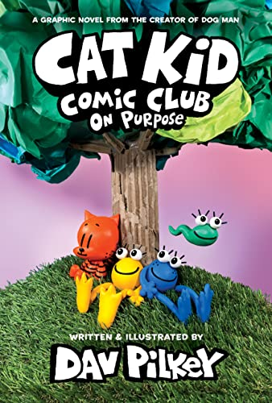
04轻松桥梁
漫画形式，练对话与叙事节奏。
🟡 Amazon Kids+：有美国 Kindle 版；尚未找到官方 Kids+ 包含标识
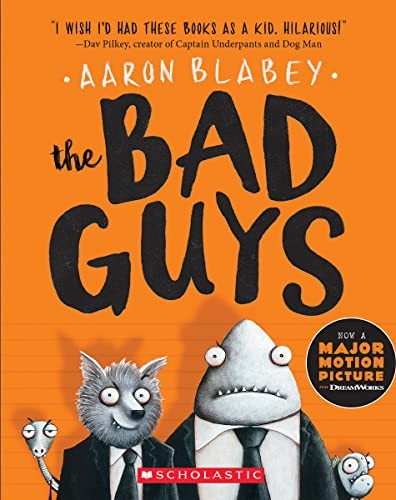
05轻松桥梁
高笑点、快节奏，适合建立连续阅读。
🟡 Amazon Kids+：有美国 Kindle 版；尚未找到官方 Kids+ 包含标识
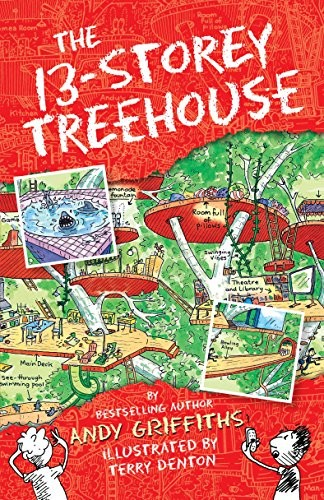
06轻松桥梁
天马行空的荒诞冒险。
🟡 Amazon Kids+：有美国 Kindle 版；尚未找到官方 Kids+ 包含标识
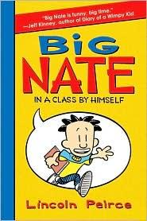
07轻松桥梁
校园幽默，图文比例友好。
🟡 Amazon Kids+：有美国 Kindle 版；尚未找到官方 Kids+ 包含标识
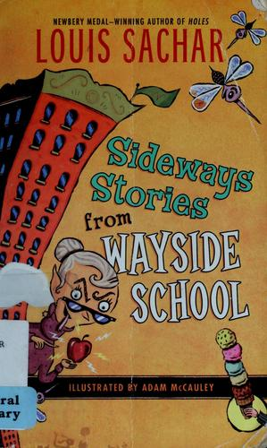
08轻松桥梁
短章怪趣故事，适合睡前分段读。
🟡 Amazon Kids+：有美国 Kindle 版；尚未找到官方 Kids+ 包含标识
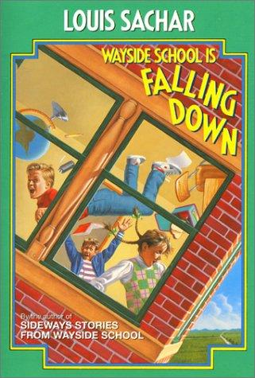
09轻松桥梁
接续怪趣校园世界。
🟡 Amazon Kids+：有美国 Kindle 版；尚未找到官方 Kids+ 包含标识
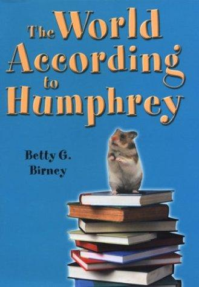
10故事章节书
仓鼠视角的校园观察，温暖又有趣。
🟡 Amazon Kids+：有美国 Kindle 版；尚未找到官方 Kids+ 包含标识
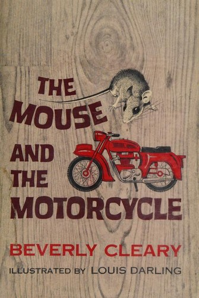
11故事章节书
经典小动物冒险，词汇自然。
🟡 Amazon Kids+：有美国 Kindle 版；尚未找到官方 Kids+ 包含标识
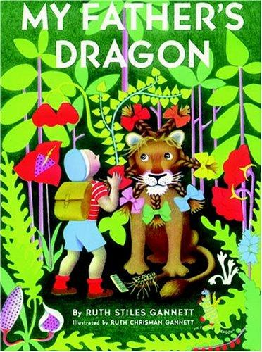
12故事章节书
短小奇幻冒险，可独立完成。
🟡 Amazon Kids+：有美国 Kindle 版；尚未找到官方 Kids+ 包含标识
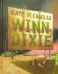
13故事章节书
友情与同理心，适合亲子聊感受。
🟡 Amazon Kids+：有美国 Kindle 版；尚未找到官方 Kids+ 包含标识
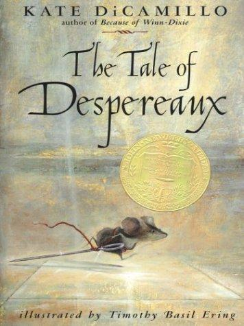
14故事章节书
勇气与善意，语言稍有挑战。
🟡 Amazon Kids+：有美国 Kindle 版；尚未找到官方 Kids+ 包含标识
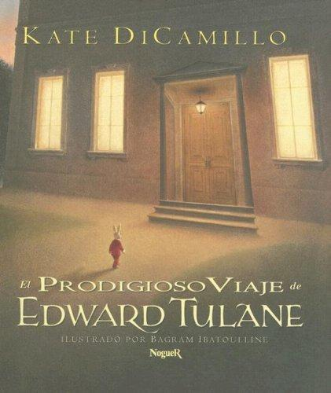
15故事章节书
情感层次丰富，建议共读讨论。
🟡 Amazon Kids+：有美国 Kindle 版；尚未找到官方 Kids+ 包含标识
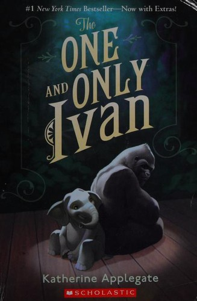
16故事章节书
动物视角与友谊，短章易读。
🟡 Amazon Kids+：有美国 Kindle 版；尚未找到官方 Kids+ 包含标识
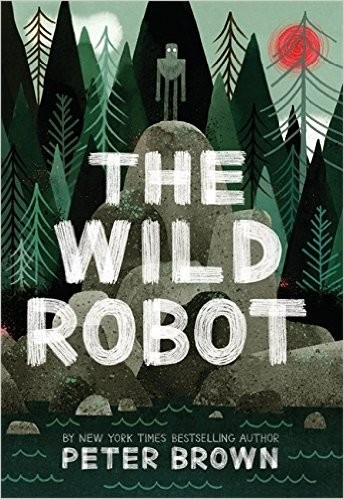
17故事章节书
自然、科技与归属感的冒险。
🟡 Amazon Kids+：有美国 Kindle 版；尚未找到官方 Kids+ 包含标识
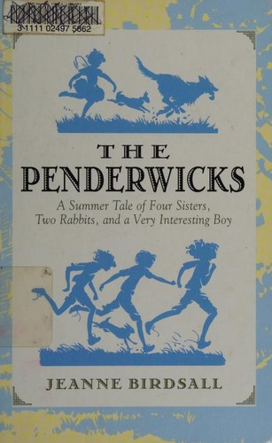
18故事章节书
家庭暑假冒险，适合慢读。
🟡 Amazon Kids+：有美国 Kindle 版；尚未找到官方 Kids+ 包含标识
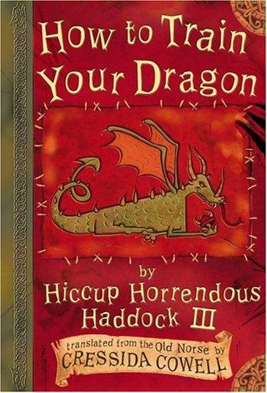
19故事章节书
龙与维京冒险，英式幽默强。
🟡 Amazon Kids+：有美国 Kindle 版；尚未找到官方 Kids+ 包含标识
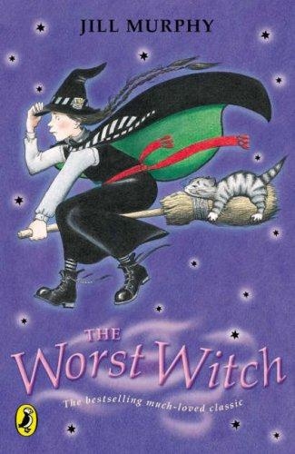
20故事章节书
魔法校园经典，章节短。
🟡 Amazon Kids+：有美国 Kindle 版；尚未找到官方 Kids+ 包含标识
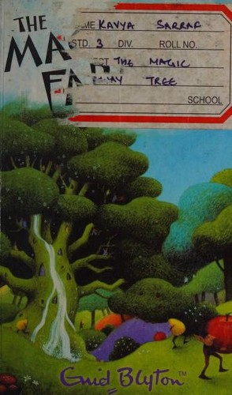
21故事章节书
想象力冒险；可顺带讨论旧文本表达。
🟡 Amazon Kids+：有美国 Kindle 版；尚未找到官方 Kids+ 包含标识
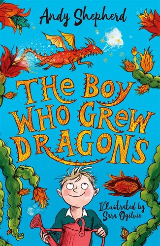
22故事章节书
温柔好笑的养龙日常。
🟡 Amazon Kids+：有美国 Kindle 版；尚未找到官方 Kids+ 包含标识
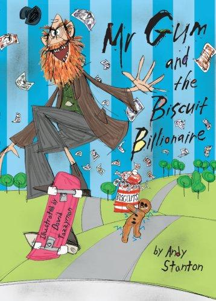
23故事章节书
英式无厘头，适合大声读。
🟡 Amazon Kids+：有美国 Kindle 版；尚未找到官方 Kids+ 包含标识
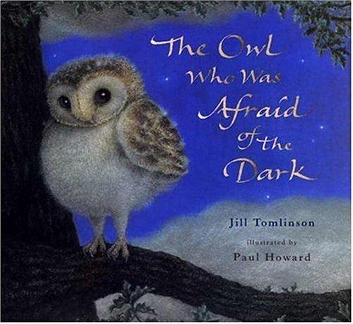
24故事章节书
克服害怕的温柔故事。
🟡 Amazon Kids+：有美国 Kindle 版；尚未找到官方 Kids+ 包含标识
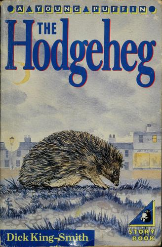
25故事章节书
小刺猬的聪明冒险。
⚪ Amazon Kids+：未发现美国区 Kindle 版，暂不纳入 Kids+ 书单
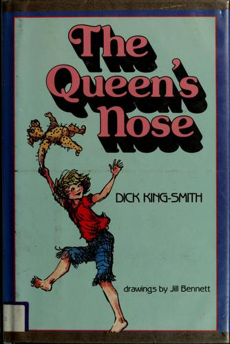
26故事章节书
愿望与责任的幻想故事。
⚪ Amazon Kids+：未发现美国区 Kindle 版，暂不纳入 Kids+ 书单
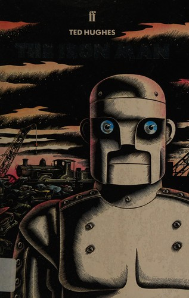
27挑战／共读
寓言式科幻，适合讨论陌生与和平。
🟡 Amazon Kids+：有美国 Kindle 版；尚未找到官方 Kids+ 包含标识
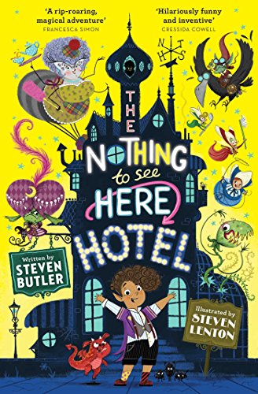
28挑战／共读
怪物酒店喜剧，词汇略进阶。
🟡 Amazon Kids+：有美国 Kindle 版；尚未找到官方 Kids+ 包含标识
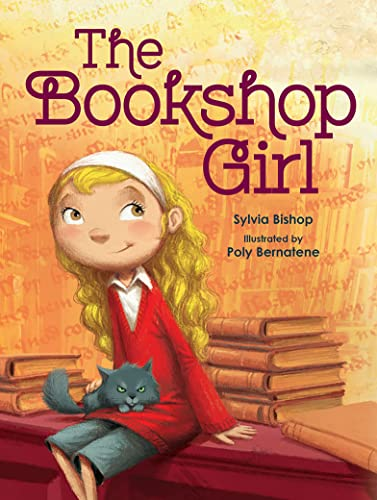
29挑战／共读
爱书小女孩的城市冒险。
🟡 Amazon Kids+：有美国 Kindle 版；尚未找到官方 Kids+ 包含标识
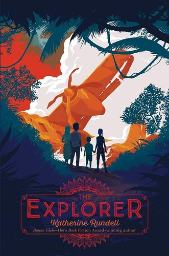
30挑战／共读
雨林求生群像，最适合亲子共读。
🟡 Amazon Kids+：有美国 Kindle 版；尚未找到官方 Kids+ 包含标识